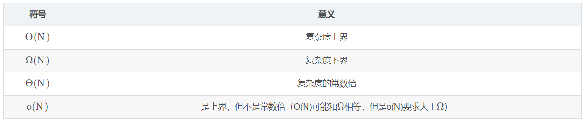

FDS
DS1¶
Algorithm Analysis¶
input, output, definiteness确定性（每条指令都是清晰的没有歧义的）, finiteness有限性（经过一定的代码这个算法一定会停下来terminate）, effectiveness（基本的->可行的,足够基本） - 与程序不同program，程序可以一直跑下去（比如做任务规划） - 算法可以有多种描述方式，实际的编程语言，自然语言，伪代码。不一定要具体实现才能分析
Selection Sort选择排序¶
自然语言：find the smallest from the unsorted and place it next in the sorted lists
what to analysis¶
- Machine and complier-dependent run times
- run times由机器和编译器决定->太抽象
- Time and space complexities时间空间复杂度，和machine and compliers无关
- 我们假设：指令都是单线程运行的；每条指令都是简单的，都只占据一个 时间单位；整数的规模是有限的且我们有无限内存
复杂度计算¶
- 声明的复杂度：0；每条赋值的复杂度：1；每条判断的复杂度：1；判断分支：计算所有情况中复杂度较大者；return返回的复杂度：1
- 递归的复杂度：如T(n) = T(n-1) + 2解得T(n) = 2n + 2
- 循环的复杂度：注意退出循环的 时候还有一次判断但不运行
- 总执行次数 = n+1+n*(循环体中语句执行次数)

Sort¶
ShellSort¶
//希尔排序
void ShellSort(SqList *L)
{
int i, j, increment = L->last;
do
{
increment = increment / 3 + 1;
for (i = increment + 1; i <= L->last; i++)
{
if (L->arr[i] < L->arr[i - increment])
{
L->arr[0] = L->arr[i];
for (j = i - increment; j > 0 && L->arr[0] < L->arr[j]; j -= increment)
L->arr[j + increment] = L->arr[j];
L->arr[j + increment] = L->arr[0];
}
}
} while (increment > 1);
}
最初我们选择增量gap=length/2, 循环时gap=gap/2, 最后运行至gap=1。
QuickSort¶
void quick_sort(int *num,int l,int r){
//如果小于等于1个数据元素·直接返回结束快排函数 r为数组元素总个数
if(l+1>=r){
return ;
}
int first=l,last=r-1,key=num[first];
while(first<last){
while(first<last&&num[last]>=key){
--last;
}
//如果值小于 key分界值 交换
num[first]=num[last];
while(first<last&&num[first]<key){
++first;
}
//如果值大于key分界值 交换
num[last]=num[first];
}
num[first]=key;
//递归左右部分进行快排
quick_sort(num,l,first);
quick_sort(num,first+1,r);
}
这里key取num[last]:（说明了last的位置可以被覆盖）
key和区间左端比较，如果左端
key和区间右端比较，如果右端 >key（符合条件），则区间右端左移；如果右端 <=key（不符合条件），则将区间右端放到first的位置上去。
当区间左右端重合时一轮排序结束，重合位置就是key应当被放置的位置。
对这个位置的左右两个子段进行相同的操作，直到子段内元素个数为1，说明整个数列已经完全有序。
注意，如果是key取num[first]，（说明first的位置可以被覆盖），那么key的比较应当从区间右端开始，再左端，再往复循环。
Search¶
Hashing¶
二分查找树时间复杂度NlogN建树+logN查找，对于大数据来说太慢，而hash对于大量的数据，查找复杂度一直是O(1).
hash: 知道key找到index，由key映射index。
- collision：一个key查找到了两个index。
- overflow：溢出，桶放满了。
- 当一行只有1个桶的时候，overflow和collision同时发生。
hash：选择合适的bucket和slot大小+设计key映射index的函数+桶排序+一个桶内链表